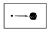
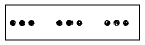
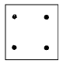
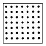
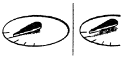

실내건축기사(구) (2004-03-07 기출문제)
1과목: 실내디자인론
1. 실내디자인의 요소에 관한 용어 설명 중 부적합한 것은?
- 소파베드(sofa bed) - 침대겸용 가능한 가구
- 다운라이트(down light) - 천장 매입형 조명
- 키친네트(kitchenet) - 부엌의 소형 주방세트
- 슈퍼그래픽(super graphic) - 카페트면에 사용하는 그래픽
(정답률: 73%)

2. 광원의 60-90% 광량이 직접 아래 표면을 향하여 비추고 적은 양의 빛은 천정을 향하여 천정 마감재의 반사율에 의한 밝기의 연출을 의도하는 조명방식은?
- 직접조명
- 반직접조명
- 간접조명
- 반간접조명
(정답률: 36%)
3. 실내공간에 있어 동선에 대한 설명 중 부적합한 것은?
- 동선은 사람이나 물건이 움직이는 선을 연결한 것을 말한다.
- 동선은 짧으면 효율적이지만 공간의 성격에 따라 길게 처리하기도 한다.
- 동선은 빈도, 속도, 하중의 3요소를 가지며, 이들 요소의 정도에 따라 거리의 장단, 폭의 대소가 결정되어 진다.
- 동선은 성격이 다른 동선일지라도 교차시켜서 계획하는 것이 바람직하다.
(정답률: 96%)
4. 오피스 랜드스케이프(office landscape)에 관한 설명 중 부적합한 것은?
- 사무공간의 능률향상을 위한 배려와 개방공간에서의 근무자의 심리적 상태를 고려한 사무공간 계획 방식이다.
- 산만하고 인위적 분위기를 정리하기 위해 고정된 간막이벽으로 구획한다.
- 시각적인 프라이버시 확보가 어렵고, 소음상의 문제가 발생할 수 있다.
- 오피스 작업을 사람의 흐름과 정보의 흐름을 매체로 효율적인 네트워크가 되도록 배치하는 방법이다.
(정답률: 65%)
5. 상점계획에서 파사드 구성에 요구되는 소비자 구매심리 5단계에 속하지 않는 것은?
- 주의(attention)
- 욕망(desire)
- 기억(memory)
- 유인(attraction)
(정답률: 53%)
6. 붙박이가구의 디자인을 할 경우에 고려해야 할 사항과 가장 거리가 먼 것은?
- 크기와 비례의 조화
- 기능의 편리성
- 분산적 배치
- 실내마감재로서의 조화
(정답률: 71%)
7. 디자인 이미지(image) 구축과 관련하여 가장 옳게 설명한 것은?
- 디자이너의 개성표출이 우선하여 강력해야 한다.
- 오랜 설계 경험과 연구는 이미지 발상과 직접 연관지을 수 없다.
- 공간의 표상성이 곧 디자인 이미지이다.
- 의장계획 자체가 서구적이어야만 한다.
(정답률: 88%)
8. 디자인 원리에 대한 설명 중 잘못된 것은?
- 황금비(golden section)는 가장 균형잡힌 비례로 직사각형이 지니는 1 : 2.68의 비례를 말한다.
- 재료표면의 질감을 텍스쳐(texture)라 한다.
- 수직선은 상승, 권위와 같은 이미지를 부여한다.
- 휴먼스케일(human scale)이란 인간의 신체를 기준으로 하여 측정되는 척도를 말한다.
(정답률: 92%)
9. 방풍 및 열손실을 최소로 줄여주면서 통행의 흐름을 완만하게 해주는 문의 형태는?
- 미닫이문
- 회전문
- 여닫이문
- 접이문
(정답률: 85%)
10. 다음 중 획일적인 디자인 이미지를 적용하기가 가장 어려운 실내공간은?
- 미술관
- 편의점
- 슈퍼마켓
- 은행
(정답률: 70%)
11. 공간에 대한 설명 중 잘못된 것은?
- 공간은 적극적 공간(positive space)과 소극적 공간(negative space)으로 구성되어 있다.
- 좁은 공간은 시간의 개념을 수반하지 않는다.
- 공간은 사용자가 보는 위치에 따라 시각적으로 수없이 변화한다.
- 실내공간은 부피로서의 체적 개념을 갖는 넓이로 이해되고 취급되어야 한다.
(정답률: 알수없음)
12. 실내디자인 프로세스 중 조건설정단계(프로그래밍단계)에 관한 설명 중 옳지 않은 것은?
- 프로젝트의 전반적인 방향이 정해지는 단계이다.
- 실내디자이너가 설계의뢰인과 협의를 통하여 이해를 확립하는 단계이다.
- 이 단계가 제대로 이루어지지 않으면 프로젝트 진행이 원만하지 못하다.
- 실내디자인 프로세스에서 기본설계단계 이후에 진행되는 단계이다.
(정답률: 70%)
13. 빛에 관한 설명 중 올바른 것은?
- 조도는 밝기를 수량적으로 표시한 것이다.
- 물체의 색이 다르게 보이는 것에 대한 광원의 성질을 휘도라 한다.
- 밝은 빛일수록 작업활동에 유리하다.
- 사색과 휴식에는 밝은 조명이 효과적이다.
(정답률: 24%)
14. 르 꼬르뷔제(Le Corbusier)의 "Modulor"는 무슨 개념에 의한 것인가?
- 균형
- 비례
- 통일
- 조화
(정답률: 69%)
15. 공간구성의 유형에 대한 설명 중 옳지 않은 것은?
- 구심형 공간구성은 중앙의 우세한 중심공간과 그 주위의 수많은 제2의 공간으로 이루어진다.
- 집합형 공간구성은 구심형 공간구성과 선형 구성의 두 가지 요소를 조합한 것이다.
- 선형 공간구성이란 일련의 공간의 반복으로 이루어진 선형적인 연속이다.
- 격자형 공간구성은 공간 속에서의 위치와 공간 상호간의 관계가 3차원적 격자 패턴 속에서 질서정연하게 배열되는 형태 및 공간으로 구성된다.
(정답률: 46%)
16. 같은 크기의 공간내에서 같은 색상으로 천장, 벽, 바닥을 마감해도 마감재의 질감, 패턴의 형태에 따라 다르게 느껴지는데, 다음 중 패턴의 형태와 그 느낌의 연결이 옳지 않은 것은?
- 세로줄무늬 - 방의 천정고를 높아보이게 한다.
- 가로줄무늬 - 벽면을 길게 보이게 한다.
- 테두리무늬 - 벽의 모양이 변해 보이게 한다.
- 작은무늬 - 방을 작게 보이게 한다.
(정답률: 48%)
17. 다음 그림 중 집합, 분리의 효과를 잘 나타낸 그림은?




(정답률: 71%)
18. 주방 작업대의 배치유형 중 ㄷ자형에 대한 설명으로 옳은 것은?
- 가장 간결하고 기본적인 설계 형태로 길이가 4.5m 이상 되면 동선이 비효율적이다.
- 두 벽면을 따라 작업이 전개되는 전통적인 형태이다.
- 인접한 세 벽면에 작업대를 붙여 배치한 형태이다.
- 작업동선이 길고 조리면적은 좁지만 다수의 인원이 함께 작업할 수 있다.
(정답률: 67%)
19. 디자인 요소로서 선에 대한 설명으로 틀린 것은?
- 길이의 개념은 있으나 폭과 부피의 개념은 없다.
- 어떤 형상을 규정하거나 한정하고 면적을 분할한다.
- 점이 이동한 궤적이며 면의 한계, 교차에서 나타난다
- 선은 수직선, 수평선, 사선, 곡선이 있으며 이중에서 사선이 가장 안정적이다.
(정답률: 69%)
20. 실내디자인의 개념에 대한 설명 중 맞지 않는 것은?
- 디자인의 한 분야로서 인간생활의 쾌적성을 추구하는 활동이다.
- 실내공간만을 대상으로 하여, 경제적, 상업적 공간으로 완성하는 전문 과정이다.
- 예술과 기술을 접목시켜 미적, 기능적 공간을 창출하는 디자인 행위이다.
- 디자인 요소를 반영하여 인간환경을 구축하는 작업이다.
(정답률: 67%)
2과목: 색채학
21. 제품 색채디자인을 하기 위한 조사, 연구에 있어서 생각할 수 있는 내용과 거리가 가장 먼 것은?
- 경쟁사의 제품색채 사용 사항조사
- 인생경험이 풍부한 어른들의 의견 청취조사
- 제품을 놓는 배경이 되는 환경의 색채조사
- 기능, 용도에 적합한 색채를 실험적으로 조사
(정답률: 47%)
22. 다음의 색 중 녹색 잔디 구장 위에서 가장 눈에 잘 띄는 유니폼 색은?
- 자주
- 보라
- 파랑
- 연두
(정답률: 72%)
23. 먼셀 표색계에 대하여 바르게 설명한 것은?
- 색상: Hue, 명도: Value, 채도: Chroma로 표기한다.
- 표기순서는 CV/H 이다.
- 먼셀 표색계의 채도는 10단계 이다.
- 먼셀 색상환의 최초 색상기준은 3원색이다.
(정답률: 46%)
24. 다음 눈의 구조 중에서 카메라의 조리개 역할을 하는 것은?
- 추상체
- 홍채
- 글라스체
- 각막
(정답률: 80%)
25. 다음 중 명시성이 가장 높은 것은?
- 흑색배경에 파랑
- 흑색배경에 노랑
- 백색배경에 주황
- 백색배경에 빨강
(정답률: 80%)
26. 7월 탄생석(보석)의 색으로 힘, 권력 등을 상징하고, 심장질환 치료 등의 효과와 의미를 갖는 색은?
- 녹색
- 빨강
- 파랑
- 보라
(정답률: 59%)
27. 색채의 시간성과 속도감에 대한 이론 중 옳은 것은?
- 삼속성 중 채도가 주로 큰 영향을 미친다.
- 장파장의 색은 시간이 길게 느껴진다.
- 단파장의 색은 속도감이 빠르다.
- 저명도의 색은 속도가 빠르게 느껴진다.
(정답률: 45%)
28. 청색에 흰색을 혼색시켜 연한 하늘색을 만들었다. 이 때 연한 하늘색은 어떻게 되었다고 할 수 있는가?
- 청색보다 명도는 높아졌고 채도는 낮아졌다.
- 청색보다 명도, 채도 모두 높아졌다.
- 청색보다 명도는 낮아졌고 채도는 높아졌다.
- 청색보다 명도, 채도 모두 낮아졌다.
(정답률: 62%)
29. 제품의 배색원리로 적절한 것은?
- 제품의 품질은 배색과 관련이 없다.
- 기호색이 반영된 배색은 상품의 소유감을 높인다.
- 배색에 소비자의 라이프스타일은 관계없다.
- 유행하는 배색 트랜드를 그대로 적용하는 것이 좋다.
(정답률: 59%)
30. 신인상파 화가들의 점묘화, 교직물, 사진인쇄 등에 이용되는 색의 혼합현상은?
- 회전혼합
- 병치혼합
- 감산혼합
- 색료혼합
(정답률: 70%)
31. 수송 기관의 대표적인 시내버스, 지하철, 기차 등의 색채처리 방법 중 비교적 잘못된 것은?
- 도장 공정이 간단할수록 좋다.
- 조색이 용이할수록 좋다.
- 변색, 퇴색하지 않는 도료가 좋다.
- 특수한 도료일수록 좋다.
(정답률: 67%)
32. 색채가 지닌 심리적, 생리적, 물리학적 성질을 잘 활용하는 일을 색채조절(Color Conditioning)이라고 한다. 다음 중 색채조절이 특히 중요시되는 곳은?
- 상점
- 공공단체
- 음식점
- 생산공장
(정답률: 44%)
33. 먼셀색입체를 무채색축을 통하여 수직으로 절단한 단면은?
- 동일 색상면
- 동일 명도면
- 동일 채도면
- 동일명도와 동일 채도면
(정답률: 23%)
34. 색상에 의하여 망막이 자극을 받게 되면 시세포의 흥분이 중추에 전해져 자극이 끝난 후에도 계속해서 생기는 시감각 현상은?
- 대비
- 융합
- 조화
- 잔상
(정답률: 71%)
35. C.I.E 색도도에 관한 설명 중 틀린 것은?
- 빛의 혼색실험에 기초한 것이다.
- 백색광은 색도도에 중앙에 위치한다.
- 순수파장의 색은 바깥 둘레에 위치한다.
- 색도도의 모양은 타원형으로 되어 있다.
(정답률: 38%)
36. 색채에 대한 연상(連想)과 상징(象徵)을 짝지워 놓은 것중 잘못된 것은?
- 자색(purple) : 창조, 우미, 신비, 신앙
- 황색(Yellow) : 팽창, 희망, 광명, 유쾌
- 회색(Gray) : 정지, 허무, 불안, 부활
- 청색(blue) : 심원, 냉정, 영원, 성실
(정답률: 48%)
37. 다음 채도의 속성에 관한 설명 중 잘못된 것은?
- 색의 강하고 약한 것을 나타낸다.
- 색의 맑고 흐린 것을 나타낸다.
- 색의 밝고 어두운 것을 나타낸다.
- 색의 순도를 나타낸다.
(정답률: 62%)
38. 다음 중 헤링의 반대색설에 해당되지 않는 색은?
- 빨강
- 노랑
- 보라
- 파랑
(정답률: 83%)
39. 색채 계획을 세우기 위하여 어떤 연구 단계를 거치는 것이 좋은가?
- 색채환경분석 → 색채전달계획 → 색채심리분석 → 디자인에 적용
- 색채전달계획 → 색채환경분석 → 색채심리분석 → 디자인에 적용
- 색채환경분석 → 색채심리분석 → 색채전달계획 → 디자인에 적용
- 색채심리분석 → 색채환경분석 → 색채전달계획 → 디자인에 적용
(정답률: 64%)
40. 다음 배색 중 가장 통일감을 주는 배색은?
- 자주, 연두, 청록
- 빨강, 노랑, 녹색
- 보라, 녹색, 주황
- 빨강, 주황, 자주
(정답률: 67%)
3과목: 인간공학
41. 피부로 느낄 수 있는 감각 중 감수성이 가장 높은 것은?
- 통각
- 압각
- 냉각
- 온각
(정답률: 69%)
42. 상자가 너무 무거워 보이는 것을 해결하려 한다. 이 문제 해결에 참고사항으로 적절치 못한 내용은?
- 밝은 색은 가볍고, 어두운 색채는 무겁다.
- 황색은 가볍고 자색은 무겁다.
- 무채색에서는 흰색이 가장 가볍고, 검정색이 가장 무겁다.
- 동일한 명도의 경우에 채도가 높은 색은 무겁고, 채도가 낮은 색채는 가볍다.
(정답률: 48%)
43. 인간공학에 대한 설명 중 틀린 것은?
- 인간요소를 고려한 학문으로서 일본에서 태동하였다.
- 물건, 기구, 환경을 설계하는 과정에서 인간을 고려하는데 초점을 두고 있다.
- 실용적 효능과 인생의 가치 기준을 높이는데 목표를 두고 있다.
- 인간의 특성이나 행동에 대한 적절한 정보를 체계적으로 적용하는 것이다.
(정답률: 74%)
44. 그림처럼 비스듬히 보았을 때 지침이 눈금에서 떨어져 보여 착각을 일으키는 모양에 대한 직접적인 요인이 아닌 것은?

- 시력(視力)
- 시차(視差)
- 패럴랙스(Parallax)
- 변위(變位)
(정답률: 36%)
45. 터널에서 입구 부근은 밝게 하고, 서서히 조도를 저하시키는 조명 방법은?
- 전반조명
- 국부조명
- 투과조명
- 완화조명
(정답률: 80%)
46. 암순응한 눈으로 색을 보면, 다른 때 보다 적색이 어둡게 보이고 청색이 밝게 보이는 현상은?
- 명소시 효과
- 메타메리즘 효과
- 푸르킨예 효과
- 암소시 효과
(정답률: 62%)
47. 인체의 부위 중에서 체온이 가장 높은 부위는?
- 피부
- 손발
- 직장
- 겨드랑이
(정답률: 14%)
48. 머리둘레의 인체측정 방법이 옳은 것은? (단, 눈썹보다 높은 위치에서 세번 재었을 경우)
- 가장 작은 것
- 가장 큰 것
- 평균인 것
- 작은것의 평균인 것
(정답률: 45%)
49. 다음 가압동작 중 가장 간단하고 대표적인 동작의 예는?
- 누름 버튼
- 레버 조작
- 노브
- 크랭크
(정답률: 65%)
50. 자동화된 공장이나 현장에서 인간이 분담하는 작업으로 가장 주축이 되는 것은?
- 감시작업
- 시간작업
- 근력작업
- 운동작업
(정답률: 86%)
51. 선명한 상을 얻도록 빛의 산란을 막는 역할을 하는 것은?
- 각막
- 맥락막
- 공막
- 망막
(정답률: 50%)
52. 소리의 3요소가 아닌 것은?
- 음압
- 진폭
- 진동수
- 파형
(정답률: 18%)
53. 도서관의 경우 허용 소음레벨은 어느 정도인가?
- 10phon
- 25phon
- 40phon
- 60phon
(정답률: 13%)
54. 표면의 단위면적당 반사 또는 방출되는 빛의 양을 가리키는 척도는?
- 광도(luminance)
- 반사율(reflectance)
- 조도(illuminance)
- 대비(contrast)
(정답률: 45%)
55. 시각표시장치의 가독성에 영향을 미치는 요소가 아닌 것은?
- 숫자와 문자의 배열 방법
- 눈금의 폭과 길이
- 지침의 형태와 크기
- 지침의 무게와 회전방향
(정답률: 59%)
56. 미각(맛)에 사용되는 단위는?
- 거스트(gust)
- 그래버티(gravity)
- 휘발도(volatility)
- 시럽(syrup)
(정답률: 12%)
57. 청각의 개인차에 관한 설명으로 옳은 것은?
- 여자는 저음이 잘 들린다.
- 남자는 고음이 잘 들린다.
- 낮은 진동수에서는 남자의 청력이 우수하고 높은 진동수에서는 여자가 우수하다.
- 나이가 들수록 높은 소리보다 낮은 소리에 대한 감도가 떨어진다.
(정답률: 44%)
58. 발의 길이를 측정할 때(가장 긴발가락끝에서 뒷꿈치 까지의 길이)맞는 것은?
- 체중을 두발에 균등하게 주고 섰을 때의 왼발
- 체중을 두발에 균등하게 주고 섰을 때의 오른발
- 체중을 왼발에 주고 섰을 때의 오른발
- 체중을 오른발에 주고 섰을 때의 왼발
(정답률: 0%)
59. 동작 경제의 법칙에 맞지 않는 것은?
- 동작의 범위는 최소로 할 것
- 사용하는 신체의 범위를 가급적 많게 할 것
- 동작을 가급적 조합하여 하나의 동작으로 할 것
- 동작의 순서를 합리화 할 것
(정답률: 62%)
60. 자료의 통계분석에서 상관관계가 전혀 없음을 나타내는 상관계수(coefficient of correlation)는 얼마인가?
- +1.0
- 0
- -1.0
- ± 1.0
(정답률: 59%)
4과목: 건축재료
61. 다음 중 인서트(insert)의 재질로 가장 좋은 것은?
- 주철
- 알루미늄
- 목재
- 구리
(정답률: 56%)
62. 목재와 함수율과의 관계를 설명한 것 중 부적당한 것은?
- 목재의 수축ㆍ팽창은 함수율이 섬유포화점 이상의 범위에서는 증감이 거의 없다.
- 완전흡수로 공기를 전부 배제한 목재는 부패하지 않는다.
- 구조용재는 함수율 15% 이하로, 마감 및 가구재는 10% 이하로 하는 것이 바람직하다.
- 섬유포화점 이하에서는 함수율의 감소에 따라 강도가 감소하고 인성은 증가한다.
(정답률: 20%)
63. 화성암에 속하며 견고하고 대형재의 생산이 가능하며 바탕색과 반점이 미려하기 때문에 구조재 및 내ㆍ외장재로 많이 사용되는 것은?
- 부석
- 화강암
- 대리석
- 응회암
(정답률: 67%)
64. 목재에 관한 기술 중 옳지 않은 것은?
- 일반적으로 심재는 변재보다 강도가 높다.
- 심재는 변재보다 함수율이 높아 부패하기 쉽다.
- 목재의 건조방법에는 침수건조, 대기건조 및 인조건 조법이 있다.
- 건조는 목재의 강도 증진 및 비틀림을 방지하는 효과를 얻을 수 있다.
(정답률: 65%)
65. 목재의 절대건조비중이 0.8일 때 이 목재의 공극율은?
- 약 42%
- 약 48%
- 약 52%
- 약 58%
(정답률: 39%)
66. 자갈 시료의 표면수를 포함한 중량이 2,100g이고 표면건조내부포화상태의 중량이 2,090g이며 절대건조상태의 중량이 2,070g이라면 흡수율과 표면수율은 약 몇 % 인가?
- 흡수율 0.48%, 표면수율 0.97%
- 흡수율 0.48%, 표면수율 1.45%
- 흡수율 0.97%, 표면수율 0.48%
- 흡수율 0.97%, 표면수율 1.45%
(정답률: 30%)
67. 고온소성의 무수석고를 특별한 화학처리를 한 것으로 킨스시멘트라고도 불리우는 것은?
- 경석고 플라스터
- 혼합석고 플라스터
- 보드용 플라스터
- 돌로마이트 플라스터
(정답률: 65%)
68. 점토의 성질에 대한 설명 중 틀린 것은?
- 알루미나가 많은 점토는 가소성이 나쁘다.
- 점토의 압축강도는 인장강도의 약 5배 정도이다.
- 점토입자가 미세할수록 가소성은 좋아진다.
- 가소성이 너무 큰 경우에는 모래 또는 샤모트 등을 첨가하여 조절한다.
(정답률: 40%)
69. 열가소성 플라스틱 중 투광성이 높고 경량으로 내후성과 내약품성, 역학적 성질이 뛰어나기 때문에 유리대용품으로서 광범위하게 이용되고 있는 것은 어느 것인가?
- 염화비닐수지
- 메타크릴수지
- 폴리에틸렌수지
- 폴리프로필렌수지
(정답률: 15%)
70. 점토제품에 관한 설명으로 틀린 것은?
- 타일의 제조는 건식법과 습식법이 있으며 복잡한 형상의 것은 습식법이 적당하다.
- 테라코타는 대형 점토제품이며 석기질 점토나 철분이 많은 점토를 사용한다.
- 일반적으로 모자이크타일과 내장타일은 습식법으로, 외장타일과 바닥타일은 건식법으로 제조된다.
- 벽돌의 제조는 저급점토를 사용하며 소성은 등요, 호프만요 등이 주로 사용된다.
(정답률: 43%)
71. 다음 중 회반죽 바름벽에 칠하기에 가장 좋지 않은 재료는?
- 염화비닐 수지에나멜
- 수성페인트
- 아크릴 수지에나멜
- 유성페인트
(정답률: 28%)
72. 인조석에 쓰이는 종석의 재료와 가장 거리가 먼 것은?
- 화강암
- 사문암
- 대리석
- 화산암
(정답률: 25%)
73. 요소수지의 성질에 대한 설명 중 옳지 않는 것은?
- 열경화성수지이다.
- 내수합판의 접착제로 널리 사용된다.
- 무색이어서 착색이 자유롭다.
- 멜라민수지보다 내열성, 내수성이 우수하다.
(정답률: 34%)
74. 석고보드의 성질에 대한 설명 중 옳지 않은 것은?
- 휨강도는 보드의 축방향이 길이방향에 비해서 2-3배 강하다.
- 열전도율은 콘크리트의 1/6-1/7이다.
- 흡습되면 강도 및 강성이 저하된다.
- 연하고 부서지기 쉬우므로 고정할 때는 못 등이 주로 사용되지만, 그 부근이 파손될 우려가 있다.
(정답률: 47%)
75. 고로시멘트의 특징에 대한 설명 중 옳은 것은?
- 하수나 해수 등에 대한 내식성은 슬래그 배합이 비교적 많은 것이 우수하다.
- 수용성을 높이고 수산화석회의 용출에 의한 공극을 감소시켜, 수중콘크리트 시공에 적합하다
- 조강성을 요하는 공사용으로 거푸집 존치기간을 줄일수 있어 공사속도를 빨리 할 수 있다.
- 경화건조수축은 거의 없으며, 화학저항성이 일반적으로 크며 내황산염성이 있다.
(정답률: 10%)
76. 강의 열처리방법 중 결정을 미립화하고 균일하게 하기 위해 800 ~ 1000℃의 온도로 가열한 후 대기 중에서 냉각하는 열처리는?
- 풀림
- 불림
- 담금질
- 뜨임질
(정답률: 39%)
77. 석고플라스터와 석회바름의 비교설명 중 틀린 것은?
- 석고플라스터는 원칙적으로 해초 또는 풀즙을 사용하지 않는다.
- 석회바름은 미장마감한 표면만이 특히 견고하게 되나 석고플라스터는 내부까지 거의 동일한 경도가 된다.
- 석고플라스터가 경화기간이 더 짧다.
- 석고플라스터는 건조하면 수축하나 석회바름은 팽창한다.
(정답률: 28%)
78. 다음의 비철금속에 대한 설명 중 옳지 않은 것은?
- 지붕재료 등에 있어서 동판과 철판을 서로 접하여 사용하지 않는다.
- 동은 암모니아에 접하면 손상되기 쉽다.
- 황동은 동과 아연을 주체로 한 합금으로 정첩, 창문의 레일 및 장식 철물 등에 널리 이용된다.
- 알루미늄은 알칼리에 강하며 모르타르에 직접 접하여 사용할 수 있다.
(정답률: 53%)
79. 접착제에 대한 설명 중 틀린 것은?
- 동물질 아교는 비교적 접착력이 크고 취급하기 용이 하나 내수성이 부족하다.
- 페놀수지 접착제는 목재, 금속, 플라스틱 및 이들 이종재(異種材)간의 접착에 사용된다.
- 에폭시수지 접착제는 목재, 석재의 접합에는 적당하나 금속 접합에는 사용할 수 없다.
- 비닐수지 접착제는 내열성, 내수성이 떨어져 옥외 사용에는 적당하지 않다.
(정답률: 85%)
80. 콘크리트의 크리프에 관한 설명 중 옳은 것은?
- 재하시의 재령이 길수록 크다.
- 시멘트량 또는 단위수량이 많을수록 크다.
- 하중이 클수록 작다.
- 부재의 단면치수가 클수록 크다.
(정답률: 알수없음)
5과목: 건축일반
81. 철근콘크리트보에서 늑근을 쓰는 가장 주된 이유는?
- 콘크리트의 부착력을 증대시키기 위해서
- 휨 모멘트를 보강하기 위해서
- 주근의 위치를 보존하기 위해서
- 전단력에 의한 균열을 방지하기 위해서
(정답률: 35%)
82. 철근콘크리트보를 배근할 때 주근의 이음위치로 가장 알맞는 곳은?
- 보의 중간 위치
- 인장력이 가장 적게 발생하는 곳
- 압축력이 가장 적게 발생하는 곳
- 지점으로부터 span의 1/4되는 위치
(정답률: 55%)
83. 난간동자를 세워댄 난간을 말하며, 장식겸 난간으로 사용되는 것은?
- 멍에
- 부란
- 두겁대
- 챌판
(정답률: 29%)
84. 건물내의 계단에 계단참을 설치해야 할 경우 높이 몇m 이내 마다 설치해야 하는가?
- 2m
- 3m
- 3.5m
- 4m
(정답률: 48%)
85. 다음 벽돌벽에 관한 기술 중에서 틀린 것은?
- 벽의 길이는 10m 이하로 한다.
- 내력벽으로 둘러싸인 부분의 바닥면적은 80m2를 넘을수 없다.
- 벽돌 아치의 각 부분에는 압축력이 생기지 않도록 한다.
- 밑층의 벽돌내력벽은 그 위층의 내력벽 두께보다 얇게 하지 않는다.
(정답률: 27%)
86. 다음 중 건축법상 방화구조가 아닌 것은?
- 철망모르타르로서 그 바름두께가 2cm 이상인 것
- 시멘트모르타르 위에 타일을 붙인 것으로서 그 두께의 합계가 2cm 이상인 것
- 두께 1.2㎝ 이상의 석고판 위에 석면시멘트판을 붙인것
- 심벽에 흙으로 맞벽치기한 것
(정답률: 39%)
87. 기둥의 중간부분이 가늘어 보이는 착시현상을 교정하기위해 기둥을 약간 배부르게 처리하여 시각적으로 안정감을 부여하는 수법은?
- 콜로네이드(Colonade)
- 아케이드(Arcade)
- 니치(Niche)
- 엔타시스(Entasis)
(정답률: 59%)
88. 건축법상 건축의 정의에 대한 설명 중 옳지 않은 것은?
- 이전 - 건축물의 주요구조부를 해체하지 아니하고 다른 대지로 이동시키는 것
- 증축 - 기존건축물이 있는 대지 안에서 건축물의 건축면적, 연면적, 층수 또는 높이를 증가시키는 것
- 신축 - 건축물이 없는 대지에 새로이 건축물을 축조하는 것
- 개축 - 기존건축물의 전부 또는 일부를 철거하고 그대지 안에 종전과 동일한 규모의 범위안에서 건축물을 다시 축조하는 것
(정답률: 55%)
89. 조선시대 상류주택의 각 공간별 설명이 올바른 것은?
- 안채는 주로 남자가 생활하는 공간이다.
- 반빗간은 주로 음식을 만드는 공간이다.
- 사랑채는 주로 여자가 생활하는 공간이다.
- 행랑채는 주로 결혼전의 딸들이 기거하는 공간이다.
(정답률: 31%)
90. 철골구조에 대한 기술 중 틀린 것은?
- 수평력에 대해 강하다.
- 부재가 세장하므로 좌굴하기가 쉽다.
- 고열에 강하고 불연성이다.
- 장스팬 구조물이나 고층건축에 사용된다.
(정답률: 32%)
91. 6층 이상의 거실면적의 합계가 12,000m2인 교육연구 및복지시설에 설치하여야 할 승용승강기의 설치기준은 최소 몇 대인가? (단, 8인승 기준)
- 2대
- 3대
- 4대
- 5대
(정답률: 34%)
92. 다음 중 건축법상 내화구조로 인정될 수 없는 것은?
- 철재로 보강된 유리블록 또는 망입유리로 된 지붕
- 단면이 25㎝× 30㎝인 철근콘크리트조 기둥
- 벽돌조로서 두께가 15㎝이상인 벽
- 철골조로 된 계단
(정답률: 17%)
93. 르네상스(Renaissance) 건축의 특징이 아닌 것은?
- 르네상스란 다시 태어난다는 의미로 건축분야에서는 로마 건축을 기본으로 한 건축이다.
- 고딕건축의 수직적인 요소를 탈피하고 수평적인 요소를 강조하였다.
- 대표적인 건축물 중 하나는 로마에 위치한 성 베드로 대성당이다.
- 건물의 구조적 안정성을 위하여 돔(dome)은 거의 사용하지 않았다.
(정답률: 58%)
94. 다음 중 가구식 구조에 해당하는 것은?
- 철골구조
- 철근콘크리트구조
- 벽돌구조
- 돌구조
(정답률: 43%)
95. 목조 벽체에 사용되는 가새에 관한 기술 중 틀린 것은?
- 가새의 단부에는 긴결철물을 사용하지 않는다.
- 가새의 경사는 45° 에 가까울수록 유리하다.
- 뼈대가 수평으로 교체되는 하중을 받으면 가새에는 압축응력과 인장응력이 번갈아 일어난다.
- 가새는 따내거나 결손시키지 않도록 한다.
(정답률: 33%)
96. 고딕건축을 구성하는 구조적 요소가 아닌 것은?
- 립 볼트(Rib Vault)
- 프라잉 버트리스(Flying Buttress)
- 장미창(Rose Window)
- 포인티드아치(Pointed Arch)
(정답률: 18%)
97. 로마에 위치한 성베드로 대성당의 건축에 관계되지 않은 사람은?
- 도나토 브라만테
- 쟈코모 델라 포르타
- 필리포 브루넬레스키
- 미켈란젤로 부오나로티
(정답률: 34%)
98. 소방시설 중 피난설비인 인명구조기구의 설치기준은?
- 층수가 5층 이상인 관광호텔 및 7층 이상인 병원
- 층수가 7층 이상인 관광호텔 및 5층 이상인 병원
- 층수가 5층 이상인 극장 및 7층 이상인 예식장
- 층수가 7층 이상인 극장 및 5층 이상인 예식장
(정답률: 36%)
99. 소방법 상 피난기구를 설치해야하는 층은?
- 피난층
- 2층
- 5층
- 11층
(정답률: 29%)
100. 목재의 접합에 대한 설명 중 옳지 않은 것은?
- 한 부재가 직각 또는 경사지어 맞추어지는 자리 또는 그 맞추는 방법을 이음이라 한다.
- 목재의 널 등을 모아대어 넓게 부합하는 일을 쪽매라한다.
- 접합은 응력이 작은 위치에서 한다.
- 접합에는 공작이 간단한 것을 쓰고 모양에 치중하지 않도록 한다.
(정답률: 39%)
6과목: 건축환경
101. 실내환기계획에 대한 다음의 기술중 가장 옳은 것은?
- 공기유출구의 크기는 고정시키고 유입구의 폭을 증가시키면 실내기류의 속도는 크게 변한다.
- 개구부에 부착된 루버나 블라인드 등은 실내 기류에 큰 영향을 미치지 않는다.
- 실내의 환기계획에서는 공기에 포함된 열과 습기의 이동은 크게 고려하지 않는다.
- 실내외의 온도차에 의한 환기를 중력(重力)환기라고도 한다.
(정답률: 70%)
102. 강당의 환기용 천정 디퓨저에서의 음압레벨이 500Hz에서 35dB이다. 이 디퓨저가 모두10개가 있을 때 환기구 전체에서 발생하는 음압레벨은 얼마인가?
- 40dB
- 45dB
- 50dB
- 55dB
(정답률: 62%)
103. 다음 중 간접배수를 하지 않아도 되는 것은?
- 세면대
- 급수탱크
- 냉장고
- 수음기
(정답률: 58%)
104. 밝은 창문을 배경으로 한 경우 물체등이 잘 보이지 않는 것을 무엇이라 하는가?
- 실루엣 현상
- 마스킹 현상
- 스컬러 현상
- 글레어 인덱스 현상
(정답률: 50%)
1⑤. 에너지 절약을 위한 방법이 아닌 것은?
- 단열을 강화한다.
- 환기량을 늘린다.
- 효율적인 에너지 기기를 사용한다.
- 자연에너지를 이용한다.
(정답률: 57%)
106. 결로를 방지하기 위한 방법으로 옳지 못한 것은?
- 실내의 습도를 낮춘다.
- 벽체의 일부분이 얇거나 재료가 달라서 열관류저항이 작은부분이 생기지 않도록 한다.
- 표면결로를 방지하기 위해서는 실내공기의 노점이 실내벽 표면온도보다 높아야한다.
- 내부결로를 방지하기 위해 벽체내의 수증기이동을 방지한다.
(정답률: 40%)
107. 기온의 연교차에 대한 설명으로 맞는 것은 어느 것인가?
- 1년 중 가장 더운 시각과 가장 추운 시각의 차이
- 1년 중 가장 더운 날과 가장 추운 날의 평균기온차이
- 1년 중 가장 더운 날 10일과 가장 추운날 10일의 평균기온차이
- 1년 중 가장 더운 달과 가장 추운 달의 월평균 기온차이
(정답률: 34%)
108. 음향장해 현상의 하나인 공명을 피하기 위한 대책으로서 부적절한 것은?
- 실의 표면을 불규칙한 형태로 한다.
- 실내 높이,폭,길이의 비율을 조절한다.
- 확산체를 적절히 사용한다.
- 많은 반사재를 분산배치 시킨다.
(정답률: 55%)
109. 자연환기를 위한 개구부 위치 설명중 옳은 것은?
- 환기가 잘 이루어지려면 위치에 관계없이 개구부가 2개소 있으면 된다.
- 자연환기는 온도차에 의한 환기와 바람에 의한 환기두가지 방법 중에서 한방법으로만 이루어진다.
- 바람에 의한 환기는 바람의 후면(Leeward)에서는 개구부 위치에 영향을 적게 받는다.
- 개구부의 병렬합성과 직렬합성은 개구부 실효 면적의 합으로 통풍량을 구한다.
(정답률: 28%)
110. 소음평가 방법 중 Beranek에 의해 제안되었으며 옥타브 분석법에 의한 소음허용치로 실내 소음 허용치로 사용되는 것은?
- NRN
- dB(A)
- TNI
- NC
(정답률: 16%)
111. 잔향시간(reverberation time)의 설명으로 옳은 것은?
- 잔향시간은 실의 용적이 커지면 길어진다.
- 잔향시간은 음의 발생이 중지된후 에너지 밀도가 30dB감쇠하는데 요하는 시간이다.
- 잔향시간은 실내의 흡음력이 커지면 길어진다.
- 잔향시간은 명료도에는 영향을 주나 요해도에는 영향이 없다.
(정답률: 31%)
112. 환기에 관한 다음 기술 중 적합하지 않은 것은?
- 환기의 역할은 신선한 공기의 공급과 공기의 교체로 인한 열과 습기의 이동이다.
- 굴뚝효과는 실내공기의 유동이 있을 때 환기를 유발시킨다.
- 자연환기는 온도차에 의한 압력과 건물주위의 바람에 의한 압력으로 발생된다.
- 실의 대상부위에 따라 전반환기와 국소환기로 대별된다.
(정답률: 45%)
113. 물의 경도 표시에 있어 환산값으로 이용되는 성분은?
- 탄산나트륨
- 페놀
- 탄산칼슘
- 탄산마그네슘
(정답률: 65%)
114. 자외선 중 도루노선은 어느 범위를 말하는가?
- 120-200nm
- 200-290nm
- 290-320nm
- 320-400nm
(정답률: 16%)
115. 같은 주파수 음의 간섭에 의해서 입사음파가 반사음파와 중첩되어서 음압의 변동이 고정되는 현상은?
- 마스킹(masking)현상
- 정재파현상
- 플러터 에코(flutter echo)현상
- 피이드백(feedback)현상
(정답률: 40%)
116. 음의 성질에 대한 설명이다. 적절하지 않은 것은?
- 주간에는 지표면 온도가 높으므로 음파도 상승한다.
- 공기에서 음속은 액체속보다 느리다.
- 음파는 종파와 횡파로 구성되어 있다.
- 주파수와 파장은 반비례한다.
(정답률: 4%)
117. 유효온도(effective temperature)에 대한 기술로 옳은 것은?
- 환경측 요소 중에서 기온, 습도, 기류 등의 감각과 동일한 감각을 주는 포화공기의 온도이다.
- 환경의 불쾌감을 표시하는 척도로서 등온감각이라고한다.
- 겨울철 한국인의 보통 착의 시에 있어서 쾌적범위는 20∼24℃이다.
- Gagge와 Winslow에 의해 고안되었다.
(정답률: 48%)
118. 개당 1,000 lm의 광속을 발하는 전등 20개를 10m x 10m의 실에 점등했을 때 이 실의 평균조도는? (단, 조명율은 0.5, 감광보상율은 1로 한다.)
- 20lux
- 50lux
- 100lux
- 200lux
(정답률: 53%)
119. 현대도시에서 건축 실내환경에 영향을 미치는 외부환경의 변화 현상으로 가장 관계가 먼 것은?
- 도시내부의 기온 상승에 의한 열섬현상(heat island)
- 오염물질의 증가
- 고층건축물의 증가에 의한 풍속의 증가
- 국지기후(micro climate)의 발생
(정답률: 25%)
120. 건물내 발전기실에 대한 설명으로 적절하지 않은 것은?
- 부하중심에 가까울 것
- 습기, 먼지가 적은 장소일 것
- 천장높이는 보 아래 3.0m 이상일 것
- 안전을 고려하여 축전실과 떨어져 있을 것
(정답률: 50%)